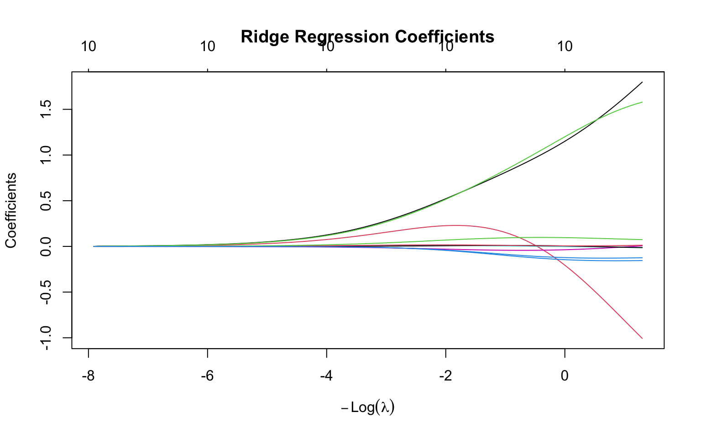
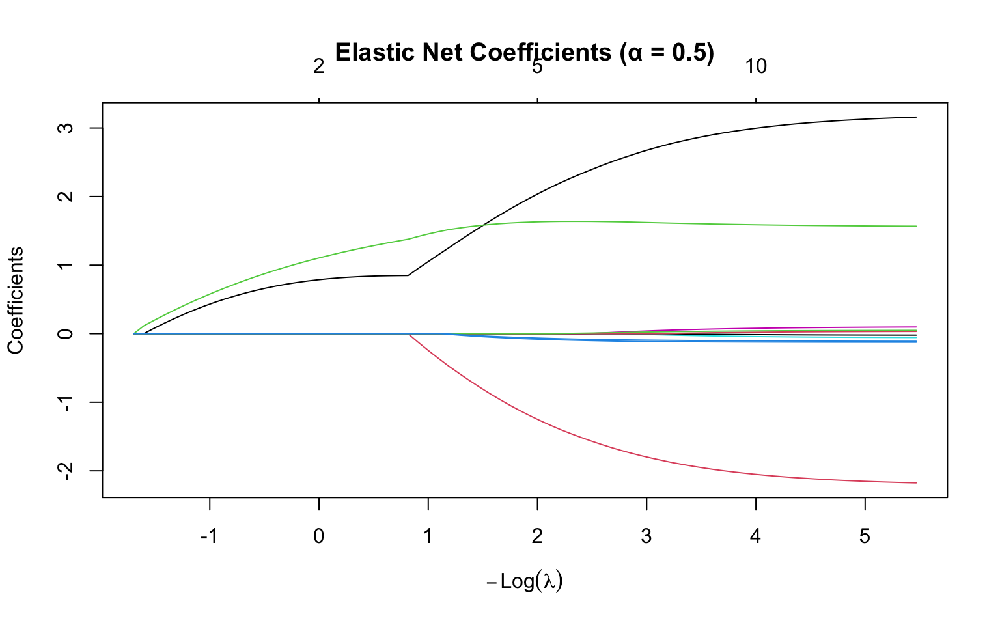
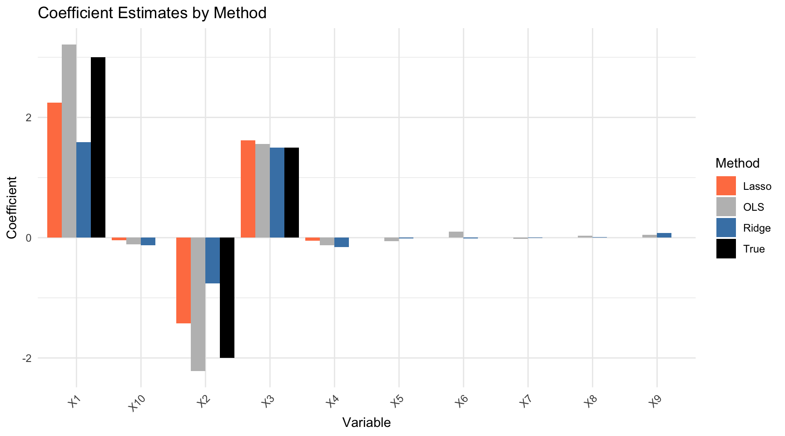

This works well when you have many more observations than predictors (\(n \gg p\)) and the predictors are not highly correlated. But problems arise in several common situations.
When you have many predictors relative to the number of observations, coefficient estimates become unstable and their variance is high. The model has too many degrees of freedom to estimate reliably from the available data. When predictors are highly correlated (multicollinearity), the problem is compounded: small changes in the data can cause dramatic swings in the estimated coefficients, even though predictions remain stable. In either case, the result is often overfitting—the model fits the training data well but predicts poorly on new observations.
Regularization addresses these issues by adding a penalty term that shrinks coefficients toward zero. This intentionally introduces a small amount of bias in exchange for a substantial reduction in variance. The net effect is usually better predictions on new data, especially when the number of predictors is large relative to the sample size.
32.2 The Regularization Idea
Regularized regression minimizes a modified objective:
In this formulation, \(P(\beta)\) is a penalty function that penalizes large coefficients, and \(\lambda \geq 0\) is the regularization parameter that controls the strength of the penalty.
The effect of the penalty is to shrink coefficients toward zero, with \(\lambda\) controlling how aggressively. When \(\lambda = 0\), there is no penalty and we recover ordinary least squares. As \(\lambda\) increases, the penalty becomes stronger and coefficients shrink more. In the limit as \(\lambda \to \infty\), all coefficients are forced to zero.
Different choices of the penalty function \(P(\beta)\) lead to different regularization methods, each with distinct properties and use cases.
32.3 Ridge Regression (L2 Penalty)
Ridge regression(Hoerl and Kennard 1970) uses the sum of squared coefficients as the penalty:
Ridge regression shrinks all coefficients toward zero but never exactly to zero. This means all predictors remain in the model regardless of how large \(\lambda\) becomes—coefficients get very small but never vanish entirely. This property makes ridge regression particularly useful when you believe all predictors are relevant to some degree. It is also especially effective when predictors are highly correlated (multicollinearity), as the penalty stabilizes the coefficient estimates that would otherwise be wildly unstable in ordinary least squares.
Code
# Generate sample data with correlated predictorsset.seed(42)n <-100p <-10X <-matrix(rnorm(n * p), n, p)# Create correlated predictorsX[, 2] <- X[, 1] +rnorm(n, sd =0.5)X[, 3] <- X[, 1] +rnorm(n, sd =0.5)true_beta <-c(3, -2, 1.5, rep(0, p -3))y <- X %*% true_beta +rnorm(n)# Fit ridge regression across lambda valuesridge_fit <-glmnet(X, y, alpha =0) # alpha = 0 for ridge# Plot coefficient pathsplot(ridge_fit, xvar ="lambda", main ="Ridge Regression Coefficients")

Figure 32.1: Ridge regression coefficient paths: as lambda increases, coefficients shrink toward zero but never reach exactly zero
Geometric Interpretation
Ridge regression constrains coefficients to lie within a sphere (in 2D, a circle) centered at the origin:
\[\sum_{j=1}^p \beta_j^2 \leq t\]
where \(t\) is inversely related to \(\lambda\). The OLS solution may lie outside this constraint region, so ridge finds the point where the RSS contours first touch the constraint boundary.
Figure 32.2: Geometric interpretation of ridge regression: the constraint region is circular, so the solution rarely lies exactly on an axis (coefficient rarely zero)
32.4 Lasso Regression (L1 Penalty)
Lasso (Least Absolute Shrinkage and Selection Operator) (Tibshirani 1996) uses the sum of absolute values as the penalty:
Unlike ridge, lasso can shrink coefficients exactly to zero, effectively performing variable selection. This produces sparse models with fewer predictors, making the resulting models easier to interpret since they explicitly identify which variables are “important.” However, lasso may struggle when predictors are highly correlated—in such cases, it tends to select one predictor from a correlated group arbitrarily while setting the others to zero, rather than distributing the effect among them as ridge would.
Code
# Fit lasso regressionlasso_fit <-glmnet(X, y, alpha =1) # alpha = 1 for lassoplot(lasso_fit, xvar ="lambda", main ="Lasso Regression Coefficients")
Figure 32.3: Lasso regression coefficient paths: as lambda increases, coefficients shrink and some become exactly zero (variable selection)
Geometric Interpretation
Lasso constrains coefficients to lie within a diamond (in 2D, an L1 ball):
\[\sum_{j=1}^p |\beta_j| \leq t\]
The diamond has corners on the axes, so the RSS contours often touch the constraint at a corner, forcing some coefficients to exactly zero.
Figure 32.4: Geometric interpretation of lasso: the constraint region has corners on the axes, so the solution often lies at a corner where one or more coefficients are exactly zero
The mixing parameter \(\alpha\) controls the balance between the two penalties. When \(\alpha = 0\), elastic net reduces to pure ridge regression. When \(\alpha = 1\), it becomes pure lasso. Values between 0 and 1 give a combination of both penalties, often with \(\alpha = 0.5\) as a natural starting point.
Elastic net is often preferred when predictors are correlated. Unlike lasso, which arbitrarily selects one variable from a correlated group, elastic net tends to select groups of correlated variables together. This behavior often produces more stable and interpretable models when the underlying science suggests that correlated predictors genuinely contribute to the outcome.
Code
# Fit elastic netenet_fit <-glmnet(X, y, alpha =0.5)plot(enet_fit, xvar ="lambda", main ="Elastic Net Coefficients (α = 0.5)")

Figure 32.5: Elastic net coefficient paths with alpha = 0.5 (equal mix of L1 and L2 penalties)
Code
par(mfrow =c(1, 3))# Ridgeplot(cos(theta), sin(theta), type ="l", lwd =2, col ="blue",asp =1, xlim =c(-1.2, 1.2), ylim =c(-1.2, 1.2),xlab =expression(beta[1]), ylab =expression(beta[2]),main ="Ridge (α = 0)")# Elastic netalpha_en <-0.5en_x <- en_y <-numeric(100)for (i in1:100) {# Approximate elastic net constraint boundary ang <- theta[i] r <-1/ (alpha_en * (abs(cos(ang)) +abs(sin(ang))) + (1- alpha_en)) en_x[i] <- r *cos(ang) en_y[i] <- r *sin(ang)}plot(en_x, en_y, type ="l", lwd =2, col ="purple",asp =1, xlim =c(-1.2, 1.2), ylim =c(-1.2, 1.2),xlab =expression(beta[1]), ylab =expression(beta[2]),main ="Elastic Net (α = 0.5)")# Lassoplot(diamond_x, diamond_y, type ="l", lwd =2, col ="red",asp =1, xlim =c(-1.2, 1.2), ylim =c(-1.2, 1.2),xlab =expression(beta[1]), ylab =expression(beta[2]),main ="Lasso (α = 1)")
Figure 32.6: Elastic net constraint region: intermediate between ridge (circle) and lasso (diamond)
32.6 Choosing Lambda with Cross-Validation
The regularization parameter \(\lambda\) is typically chosen by cross-validation:
Code
# Cross-validation for lassoset.seed(123)cv_lasso <-cv.glmnet(X, y, alpha =1)# Plot cross-validation resultsplot(cv_lasso)# Optimal lambda valuescat("Lambda with minimum CV error:", round(cv_lasso$lambda.min, 4), "\n")
Lambda with minimum CV error: 0.0378
Code
cat("Lambda within 1 SE of minimum:", round(cv_lasso$lambda.1se, 4), "\n")
Lambda within 1 SE of minimum: 0.0957
Figure 32.7: Cross-validation to select optimal lambda: the left dashed line marks the minimum error, the right marks the most regularized model within one standard error
The lambda.1se (one standard error rule) often provides a more parsimonious model with nearly as good performance as the minimum.
Extracting Coefficients
Code
# Coefficients at different lambda valuescat("\nCoefficients at lambda.min:\n")
The comparison reveals the distinct behavior of each method. OLS estimates show high variance, especially for the variables whose true coefficients are zero—these spuriously appear nonzero due to fitting noise. Ridge shrinks all coefficients toward zero, reducing variance, but it doesn’t eliminate any predictors from the model. Lasso strikes a different balance: it correctly identifies many of the zero coefficients and sets them exactly to zero, producing a sparse model that more closely matches the true data-generating process.
32.8 Visualizing the Comparison
Code
# Plot comparisonvar_names <-paste0("X", 1:p)coef_df <-data.frame(Variable =rep(var_names, 4),Method =rep(c("True", "OLS", "Ridge", "Lasso"), each = p),Coefficient =c(true_beta,as.vector(coef_ols)[-1],as.vector(coef_ridge)[-1],as.vector(coef_lasso)[-1]))ggplot(coef_df, aes(x = Variable, y = Coefficient, fill = Method)) +geom_bar(stat ="identity", position ="dodge") +scale_fill_manual(values =c("True"="black", "OLS"="gray","Ridge"="steelblue", "Lasso"="coral")) +theme(axis.text.x =element_text(angle =45, hjust =1)) +labs(title ="Coefficient Estimates by Method")

Figure 32.8: Comparison of coefficient estimates: true values, OLS, ridge, and lasso. Lasso successfully identifies zero coefficients while ridge shrinks but retains all.
Error in `h()`:
! error in evaluating the argument 'x' in selecting a method for function 'mean': dims [product 50] do not match the length of object [100]
Choosing among regularization methods depends on your goals and the structure of your data.
Ridge regression is the natural choice when you believe all predictors are genuinely relevant to the outcome, even if their individual effects are small. It is particularly effective when predictors are highly correlated, as the L2 penalty stabilizes coefficient estimates. Ridge tends to produce the most stable predictions, though the resulting model includes all variables, which may complicate interpretation.
Lasso is preferred when you want automatic variable selection and believe only a subset of predictors are truly relevant. The resulting sparse models are easier to interpret and communicate, since they explicitly identify which variables matter. However, lasso can behave arbitrarily when predictors are correlated, selecting one while zeroing out others that may be equally important.
Elastic net offers a middle ground that is often optimal in practice. Use it when predictors are correlated but you still want variable selection—elastic net tends to select groups of correlated variables together rather than making arbitrary choices. It’s also a sensible default when you’re unsure whether ridge or lasso is more appropriate, as cross-validation can select an optimal mixing parameter.
One practical note: always standardize predictors before applying regularization, as the penalty treats all coefficients equally and would otherwise penalize variables on larger scales more heavily. The glmnet function handles this automatically by default.
32.11 Regularization in Practice
High-Dimensional Data Example
Regularization is especially valuable when \(p\) approaches or exceeds \(n\):
Code
# High-dimensional example: p = 80, n = 100set.seed(42)n <-100p <-80X_hd <-matrix(rnorm(n * p), n, p)# Sparse true model: only 5 predictors mattertrue_beta_hd <-c(rep(2, 5), rep(0, p -5))y_hd <- X_hd %*% true_beta_hd +rnorm(n)# OLS fails (numerically unstable or overfits severely)# ols_hd <- lm(y_hd ~ X_hd) # Would have issues# Lasso workscv_lasso_hd <-cv.glmnet(X_hd, y_hd, alpha =1)# How many non-zero coefficients?lasso_coef <-coef(cv_lasso_hd, s ="lambda.1se")n_nonzero <-sum(lasso_coef[-1] !=0)cat("True non-zero coefficients:", 5, "\n")
Error in `X %*% c(1, -0.5, 0.3, rep(0, p - 3))`:
! non-conformable arguments
Code
# Regularized logistic regressioncv_logit <-cv.glmnet(X, y_binary, family ="binomial", alpha =1)
Error in `h()`:
! error in evaluating the argument 'x' in selecting a method for function 'drop': object 'y_binary' not found
Code
# Coefficientscat("Selected predictors for logistic regression:\n")
Selected predictors for logistic regression:
Code
logit_coef <-coef(cv_logit, s ="lambda.1se")
Error:
! object 'cv_logit' not found
Code
which(logit_coef[-1] !=0)
Error in `h()`:
! error in evaluating the argument 'x' in selecting a method for function 'which': object 'logit_coef' not found
32.12 Exercises
Exercise Reg.1: Ridge vs Lasso
Generate data with \(n = 100\) observations and \(p = 20\) predictors where:
Predictors 1-3 have coefficients 3, -2, 1
Predictors 4-6 are correlated with 1-3
Predictors 7-20 have coefficient 0
Fit OLS, ridge, and lasso. Compare the coefficient estimates to the true values.
Generate a test set and compare prediction performance.
Exercise Reg.2: Choosing Alpha
For the data above, use cross-validation to select the optimal mixing parameter \(\alpha\) for elastic net. Try \(\alpha \in \{0, 0.25, 0.5, 0.75, 1\}\).
Does the optimal \(\alpha\) match what you would expect given the correlation structure?
Exercise Reg.3: High-Dimensional Classification
Load a gene expression dataset with many more genes than samples. Use regularized logistic regression to build a classifier.
Compare the number of genes selected by lasso at lambda.min vs lambda.1se. Which would you prefer in practice?
32.13 Summary
This chapter introduced regularization as a powerful technique for preventing overfitting, especially when the number of predictors is large relative to the sample size. The core idea is to add a penalty term that shrinks coefficients toward zero, trading a small increase in bias for a substantial reduction in variance.
Ridge regression uses an L2 penalty (sum of squared coefficients) that shrinks all coefficients toward zero but never exactly to zero. This makes ridge ideal when all predictors may be relevant and particularly effective for handling multicollinearity. Lasso regression uses an L1 penalty (sum of absolute values) that can shrink coefficients exactly to zero, automatically performing variable selection. The resulting sparse models are easier to interpret, though lasso can behave arbitrarily with correlated predictors. Elastic net combines both penalties, offering the variable selection of lasso with the stability of ridge for correlated predictors.
The regularization parameter \(\lambda\) controls the penalty strength and is typically selected by cross-validation. The lambda.min value minimizes cross-validation error, while the lambda.1se (one standard error rule) often provides a more parsimonious model with nearly equivalent performance.
Standardization of predictors is essential before applying regularization, since the penalty treats all coefficients equally and would otherwise unfairly penalize variables measured on larger scales. Finally, regularization extends naturally beyond regression to classification problems through regularized logistic regression and other generalized linear models.
32.14 Additional Resources
James et al. (2023) - Detailed treatment of regularization methods
Hastie, Tibshirani, and Friedman (2009) - Theoretical foundations
Hastie, Trevor, Robert Tibshirani, and Jerome Friedman. 2009. The Elements of Statistical Learning: Data Mining, Inference, and Prediction. 2nd ed. New York: Springer.
Hoerl, Arthur E., and Robert W. Kennard. 1970. “Ridge Regression: Biased Estimation for Nonorthogonal Problems.”Technometrics 12 (1): 55–67.
James, Gareth, Daniela Witten, Trevor Hastie, and Robert Tibshirani. 2023. An Introduction to Statistical Learning with Applications in r. 2nd ed. Springer. https://www.statlearning.com.
Tibshirani, Robert. 1996. “Regression Shrinkage and Selection via the Lasso.”Journal of the Royal Statistical Society: Series B (Methodological) 58 (1): 267–88.
Source Code
# Regularization Methods {#sec-regularization}```{r}#| echo: false#| message: falselibrary(tidyverse)library(glmnet)theme_set(theme_minimal())```## The Need for RegularizationStandard linear regression estimates coefficients by minimizing the residual sum of squares (RSS):$$\text{RSS} = \sum_{i=1}^n \left(y_i - \beta_0 - \sum_{j=1}^p \beta_j x_{ij}\right)^2$$This works well when you have many more observations than predictors ($n \gg p$) and the predictors are not highly correlated. But problems arise in several common situations.When you have **many predictors** relative to the number of observations, coefficient estimates become unstable and their variance is high. The model has too many degrees of freedom to estimate reliably from the available data. When predictors are **highly correlated** (multicollinearity), the problem is compounded: small changes in the data can cause dramatic swings in the estimated coefficients, even though predictions remain stable. In either case, the result is often **overfitting**—the model fits the training data well but predicts poorly on new observations.**Regularization** addresses these issues by adding a penalty term that shrinks coefficients toward zero. This intentionally introduces a small amount of bias in exchange for a substantial reduction in variance. The net effect is usually better predictions on new data, especially when the number of predictors is large relative to the sample size.## The Regularization IdeaRegularized regression minimizes a modified objective:$$\text{Minimize: } \text{RSS} + \lambda \cdot P(\beta)$$In this formulation, $P(\beta)$ is a **penalty function** that penalizes large coefficients, and $\lambda \geq 0$ is the **regularization parameter** that controls the strength of the penalty.The effect of the penalty is to shrink coefficients toward zero, with $\lambda$ controlling how aggressively. When $\lambda = 0$, there is no penalty and we recover ordinary least squares. As $\lambda$ increases, the penalty becomes stronger and coefficients shrink more. In the limit as $\lambda \to \infty$, all coefficients are forced to zero.Different choices of the penalty function $P(\beta)$ lead to different regularization methods, each with distinct properties and use cases.## Ridge Regression (L2 Penalty)**Ridge regression** [@hoerl1970ridge] uses the sum of squared coefficients as the penalty:$$P(\beta) = \sum_{j=1}^p \beta_j^2$$The full optimization problem is:$$\hat{\beta}^{\text{ridge}} = \arg\min_\beta \left\{ \sum_{i=1}^n \left(y_i - \beta_0 - \sum_{j=1}^p \beta_j x_{ij}\right)^2 + \lambda \sum_{j=1}^p \beta_j^2 \right\}$$### Properties of Ridge RegressionRidge regression shrinks all coefficients toward zero but **never exactly to zero**. This means all predictors remain in the model regardless of how large $\lambda$ becomes—coefficients get very small but never vanish entirely. This property makes ridge regression particularly useful when you believe all predictors are relevant to some degree. It is also especially effective when predictors are highly correlated (multicollinearity), as the penalty stabilizes the coefficient estimates that would otherwise be wildly unstable in ordinary least squares.```{r}#| label: fig-ridge-path#| fig-cap: "Ridge regression coefficient paths: as lambda increases, coefficients shrink toward zero but never reach exactly zero"#| fig-width: 8#| fig-height: 5# Generate sample data with correlated predictorsset.seed(42)n <-100p <-10X <-matrix(rnorm(n * p), n, p)# Create correlated predictorsX[, 2] <- X[, 1] +rnorm(n, sd =0.5)X[, 3] <- X[, 1] +rnorm(n, sd =0.5)true_beta <-c(3, -2, 1.5, rep(0, p -3))y <- X %*% true_beta +rnorm(n)# Fit ridge regression across lambda valuesridge_fit <-glmnet(X, y, alpha =0) # alpha = 0 for ridge# Plot coefficient pathsplot(ridge_fit, xvar ="lambda", main ="Ridge Regression Coefficients")```### Geometric InterpretationRidge regression constrains coefficients to lie within a sphere (in 2D, a circle) centered at the origin:$$\sum_{j=1}^p \beta_j^2 \leq t$$where $t$ is inversely related to $\lambda$. The OLS solution may lie outside this constraint region, so ridge finds the point where the RSS contours first touch the constraint boundary.```{r}#| label: fig-ridge-geometry#| fig-cap: "Geometric interpretation of ridge regression: the constraint region is circular, so the solution rarely lies exactly on an axis (coefficient rarely zero)"#| fig-width: 6#| fig-height: 6# Geometric illustrationtheta <-seq(0, 2*pi, length.out =100)plot(cos(theta), sin(theta), type ="l", lwd =2, col ="blue",asp =1, xlim =c(-1.5, 1.5), ylim =c(-1.5, 1.5),xlab =expression(beta[1]), ylab =expression(beta[2]),main ="Ridge Constraint Region")# Add contours representing RSSfor (r inseq(0.3, 1.5, 0.3)) {lines(r *cos(theta) +0.8, r *sin(theta) +0.6,col ="gray", lty =2)}# OLS estimatepoints(0.8, 0.6, pch =19, cex =2, col ="red")text(0.8, 0.75, "OLS", col ="red")# Ridge estimate (on boundary)points(0.5, 0.37, pch =19, cex =2, col ="blue")text(0.5, 0.5, "Ridge", col ="blue")legend("bottomleft", c("Constraint region", "RSS contours"),col =c("blue", "gray"), lty =c(1, 2), lwd =c(2, 1))```## Lasso Regression (L1 Penalty)**Lasso** (Least Absolute Shrinkage and Selection Operator) [@tibshirani1996regression] uses the sum of absolute values as the penalty:$$P(\beta) = \sum_{j=1}^p |\beta_j|$$The optimization problem is:$$\hat{\beta}^{\text{lasso}} = \arg\min_\beta \left\{ \sum_{i=1}^n \left(y_i - \beta_0 - \sum_{j=1}^p \beta_j x_{ij}\right)^2 + \lambda \sum_{j=1}^p |\beta_j| \right\}$$### Properties of Lasso RegressionUnlike ridge, lasso can shrink coefficients **exactly to zero**, effectively performing **variable selection**. This produces **sparse models** with fewer predictors, making the resulting models easier to interpret since they explicitly identify which variables are "important." However, lasso may struggle when predictors are highly correlated—in such cases, it tends to select one predictor from a correlated group arbitrarily while setting the others to zero, rather than distributing the effect among them as ridge would.```{r}#| label: fig-lasso-path#| fig-cap: "Lasso regression coefficient paths: as lambda increases, coefficients shrink and some become exactly zero (variable selection)"#| fig-width: 8#| fig-height: 5# Fit lasso regressionlasso_fit <-glmnet(X, y, alpha =1) # alpha = 1 for lassoplot(lasso_fit, xvar ="lambda", main ="Lasso Regression Coefficients")```### Geometric InterpretationLasso constrains coefficients to lie within a diamond (in 2D, an L1 ball):$$\sum_{j=1}^p |\beta_j| \leq t$$The diamond has corners on the axes, so the RSS contours often touch the constraint at a corner, forcing some coefficients to exactly zero.```{r}#| label: fig-lasso-geometry#| fig-cap: "Geometric interpretation of lasso: the constraint region has corners on the axes, so the solution often lies at a corner where one or more coefficients are exactly zero"#| fig-width: 6#| fig-height: 6# Diamond constraintdiamond_x <-c(0, 1, 0, -1, 0)diamond_y <-c(1, 0, -1, 0, 1)plot(diamond_x, diamond_y, type ="l", lwd =2, col ="blue",asp =1, xlim =c(-1.5, 1.5), ylim =c(-1.5, 1.5),xlab =expression(beta[1]), ylab =expression(beta[2]),main ="Lasso Constraint Region")# Add contoursfor (r inseq(0.3, 1.5, 0.3)) {lines(r *cos(theta) +0.8, r *sin(theta) +0.6,col ="gray", lty =2)}# OLS estimatepoints(0.8, 0.6, pch =19, cex =2, col ="red")text(0.8, 0.75, "OLS", col ="red")# Lasso estimate (at corner)points(0.7, 0, pch =19, cex =2, col ="blue")text(0.7, 0.15, "Lasso", col ="blue")legend("bottomleft", c("Constraint region", "RSS contours"),col =c("blue", "gray"), lty =c(1, 2), lwd =c(2, 1))```## Elastic Net: Combining Ridge and Lasso**Elastic net** combines both penalties:$$P(\beta) = \alpha \sum_{j=1}^p |\beta_j| + (1-\alpha) \sum_{j=1}^p \beta_j^2$$The mixing parameter $\alpha$ controls the balance between the two penalties. When $\alpha = 0$, elastic net reduces to pure ridge regression. When $\alpha = 1$, it becomes pure lasso. Values between 0 and 1 give a combination of both penalties, often with $\alpha = 0.5$ as a natural starting point.Elastic net is often preferred when predictors are correlated. Unlike lasso, which arbitrarily selects one variable from a correlated group, elastic net tends to select groups of correlated variables together. This behavior often produces more stable and interpretable models when the underlying science suggests that correlated predictors genuinely contribute to the outcome.```{r}#| label: fig-elastic-net#| fig-cap: "Elastic net coefficient paths with alpha = 0.5 (equal mix of L1 and L2 penalties)"#| fig-width: 8#| fig-height: 5# Fit elastic netenet_fit <-glmnet(X, y, alpha =0.5)plot(enet_fit, xvar ="lambda", main ="Elastic Net Coefficients (α = 0.5)")``````{r}#| label: fig-enet-geometry#| fig-cap: "Elastic net constraint region: intermediate between ridge (circle) and lasso (diamond)"#| fig-width: 8#| fig-height: 4par(mfrow =c(1, 3))# Ridgeplot(cos(theta), sin(theta), type ="l", lwd =2, col ="blue",asp =1, xlim =c(-1.2, 1.2), ylim =c(-1.2, 1.2),xlab =expression(beta[1]), ylab =expression(beta[2]),main ="Ridge (α = 0)")# Elastic netalpha_en <-0.5en_x <- en_y <-numeric(100)for (i in1:100) {# Approximate elastic net constraint boundary ang <- theta[i] r <-1/ (alpha_en * (abs(cos(ang)) +abs(sin(ang))) + (1- alpha_en)) en_x[i] <- r *cos(ang) en_y[i] <- r *sin(ang)}plot(en_x, en_y, type ="l", lwd =2, col ="purple",asp =1, xlim =c(-1.2, 1.2), ylim =c(-1.2, 1.2),xlab =expression(beta[1]), ylab =expression(beta[2]),main ="Elastic Net (α = 0.5)")# Lassoplot(diamond_x, diamond_y, type ="l", lwd =2, col ="red",asp =1, xlim =c(-1.2, 1.2), ylim =c(-1.2, 1.2),xlab =expression(beta[1]), ylab =expression(beta[2]),main ="Lasso (α = 1)")```## Choosing Lambda with Cross-ValidationThe regularization parameter $\lambda$ is typically chosen by cross-validation:```{r}#| label: fig-cv-lambda#| fig-cap: "Cross-validation to select optimal lambda: the left dashed line marks the minimum error, the right marks the most regularized model within one standard error"#| fig-width: 8#| fig-height: 5# Cross-validation for lassoset.seed(123)cv_lasso <-cv.glmnet(X, y, alpha =1)# Plot cross-validation resultsplot(cv_lasso)# Optimal lambda valuescat("Lambda with minimum CV error:", round(cv_lasso$lambda.min, 4), "\n")cat("Lambda within 1 SE of minimum:", round(cv_lasso$lambda.1se, 4), "\n")```The `lambda.1se` (one standard error rule) often provides a more parsimonious model with nearly as good performance as the minimum.### Extracting Coefficients```{r}# Coefficients at different lambda valuescat("\nCoefficients at lambda.min:\n")coef(cv_lasso, s ="lambda.min")cat("\nCoefficients at lambda.1se:\n")coef(cv_lasso, s ="lambda.1se")```## Comparing Regularization MethodsLet's compare OLS, ridge, and lasso on the same data:```{r}# Fit models with optimal lambdaridge_cv <-cv.glmnet(X, y, alpha =0)lasso_cv <-cv.glmnet(X, y, alpha =1)# Extract coefficientscoef_ols <-coef(lm(y ~ X))coef_ridge <-coef(ridge_cv, s ="lambda.1se")coef_lasso <-coef(lasso_cv, s ="lambda.1se")# Compare (excluding intercept)comparison <-data.frame(True =c(NA, true_beta),OLS =as.vector(coef_ols),Ridge =as.vector(coef_ridge),Lasso =as.vector(coef_lasso))rownames(comparison) <-c("Intercept", paste0("X", 1:p))round(comparison, 3)```The comparison reveals the distinct behavior of each method. **OLS** estimates show high variance, especially for the variables whose true coefficients are zero—these spuriously appear nonzero due to fitting noise. **Ridge** shrinks all coefficients toward zero, reducing variance, but it doesn't eliminate any predictors from the model. **Lasso** strikes a different balance: it correctly identifies many of the zero coefficients and sets them exactly to zero, producing a sparse model that more closely matches the true data-generating process.## Visualizing the Comparison```{r}#| label: fig-method-comparison#| fig-cap: "Comparison of coefficient estimates: true values, OLS, ridge, and lasso. Lasso successfully identifies zero coefficients while ridge shrinks but retains all."#| fig-width: 9#| fig-height: 5# Plot comparisonvar_names <-paste0("X", 1:p)coef_df <-data.frame(Variable =rep(var_names, 4),Method =rep(c("True", "OLS", "Ridge", "Lasso"), each = p),Coefficient =c(true_beta,as.vector(coef_ols)[-1],as.vector(coef_ridge)[-1],as.vector(coef_lasso)[-1]))ggplot(coef_df, aes(x = Variable, y = Coefficient, fill = Method)) +geom_bar(stat ="identity", position ="dodge") +scale_fill_manual(values =c("True"="black", "OLS"="gray","Ridge"="steelblue", "Lasso"="coral")) +theme(axis.text.x =element_text(angle =45, hjust =1)) +labs(title ="Coefficient Estimates by Method")```## Prediction Performance```{r}# Generate test dataset.seed(999)X_test <-matrix(rnorm(50* p), 50, p)X_test[, 2] <- X_test[, 1] +rnorm(50, sd =0.5)X_test[, 3] <- X_test[, 1] +rnorm(50, sd =0.5)y_test <- X_test %*% true_beta +rnorm(50)# Predictionspred_ols <-predict(lm(y ~ X), newdata =data.frame(X_test))pred_ridge <-predict(ridge_cv, newx = X_test, s ="lambda.1se")pred_lasso <-predict(lasso_cv, newx = X_test, s ="lambda.1se")# Test MSEmse_ols <-mean((y_test - pred_ols)^2)mse_ridge <-mean((y_test - pred_ridge)^2)mse_lasso <-mean((y_test - pred_lasso)^2)cat("Test MSE:\n")cat(" OLS:", round(mse_ols, 3), "\n")cat(" Ridge:", round(mse_ridge, 3), "\n")cat(" Lasso:", round(mse_lasso, 3), "\n")```## When to Use Each MethodChoosing among regularization methods depends on your goals and the structure of your data.**Ridge regression** is the natural choice when you believe all predictors are genuinely relevant to the outcome, even if their individual effects are small. It is particularly effective when predictors are highly correlated, as the L2 penalty stabilizes coefficient estimates. Ridge tends to produce the most stable predictions, though the resulting model includes all variables, which may complicate interpretation.**Lasso** is preferred when you want automatic variable selection and believe only a subset of predictors are truly relevant. The resulting sparse models are easier to interpret and communicate, since they explicitly identify which variables matter. However, lasso can behave arbitrarily when predictors are correlated, selecting one while zeroing out others that may be equally important.**Elastic net** offers a middle ground that is often optimal in practice. Use it when predictors are correlated but you still want variable selection—elastic net tends to select groups of correlated variables together rather than making arbitrary choices. It's also a sensible default when you're unsure whether ridge or lasso is more appropriate, as cross-validation can select an optimal mixing parameter.One practical note: always standardize predictors before applying regularization, as the penalty treats all coefficients equally and would otherwise penalize variables on larger scales more heavily. The `glmnet` function handles this automatically by default.## Regularization in Practice### High-Dimensional Data ExampleRegularization is especially valuable when $p$ approaches or exceeds $n$:```{r}#| label: fig-high-dim#| fig-cap: "Regularization is essential for high-dimensional data where p ≈ n or p > n"#| fig-width: 8#| fig-height: 5# High-dimensional example: p = 80, n = 100set.seed(42)n <-100p <-80X_hd <-matrix(rnorm(n * p), n, p)# Sparse true model: only 5 predictors mattertrue_beta_hd <-c(rep(2, 5), rep(0, p -5))y_hd <- X_hd %*% true_beta_hd +rnorm(n)# OLS fails (numerically unstable or overfits severely)# ols_hd <- lm(y_hd ~ X_hd) # Would have issues# Lasso workscv_lasso_hd <-cv.glmnet(X_hd, y_hd, alpha =1)# How many non-zero coefficients?lasso_coef <-coef(cv_lasso_hd, s ="lambda.1se")n_nonzero <-sum(lasso_coef[-1] !=0)cat("True non-zero coefficients:", 5, "\n")cat("Lasso selected:", n_nonzero, "\n")# Which variables selected?selected <-which(lasso_coef[-1] !=0)cat("Selected variables:", paste(selected, collapse =", "), "\n")```### Regularized Logistic RegressionRegularization extends naturally to classification problems:```{r}# Binary classification exampleset.seed(42)y_binary <-rbinom(n, 1, plogis(X %*%c(1, -0.5, 0.3, rep(0, p -3))))# Regularized logistic regressioncv_logit <-cv.glmnet(X, y_binary, family ="binomial", alpha =1)# Coefficientscat("Selected predictors for logistic regression:\n")logit_coef <-coef(cv_logit, s ="lambda.1se")which(logit_coef[-1] !=0)```## Exercises::: {.callout-note}### Exercise Reg.1: Ridge vs Lasso1. Generate data with $n = 100$ observations and $p = 20$ predictors where: - Predictors 1-3 have coefficients 3, -2, 1 - Predictors 4-6 are correlated with 1-3 - Predictors 7-20 have coefficient 02. Fit OLS, ridge, and lasso. Compare the coefficient estimates to the true values.3. Generate a test set and compare prediction performance.:::::: {.callout-note}### Exercise Reg.2: Choosing Alpha4. For the data above, use cross-validation to select the optimal mixing parameter $\alpha$ for elastic net. Try $\alpha \in \{0, 0.25, 0.5, 0.75, 1\}$.5. Does the optimal $\alpha$ match what you would expect given the correlation structure?:::::: {.callout-note}### Exercise Reg.3: High-Dimensional Classification6. Load a gene expression dataset with many more genes than samples. Use regularized logistic regression to build a classifier.7. Compare the number of genes selected by lasso at `lambda.min` vs `lambda.1se`. Which would you prefer in practice?:::## SummaryThis chapter introduced **regularization** as a powerful technique for preventing overfitting, especially when the number of predictors is large relative to the sample size. The core idea is to add a penalty term that shrinks coefficients toward zero, trading a small increase in bias for a substantial reduction in variance.**Ridge regression** uses an L2 penalty (sum of squared coefficients) that shrinks all coefficients toward zero but never exactly to zero. This makes ridge ideal when all predictors may be relevant and particularly effective for handling multicollinearity. **Lasso regression** uses an L1 penalty (sum of absolute values) that can shrink coefficients exactly to zero, automatically performing variable selection. The resulting sparse models are easier to interpret, though lasso can behave arbitrarily with correlated predictors. **Elastic net** combines both penalties, offering the variable selection of lasso with the stability of ridge for correlated predictors.The regularization parameter $\lambda$ controls the penalty strength and is typically selected by **cross-validation**. The `lambda.min` value minimizes cross-validation error, while the `lambda.1se` (one standard error rule) often provides a more parsimonious model with nearly equivalent performance.**Standardization** of predictors is essential before applying regularization, since the penalty treats all coefficients equally and would otherwise unfairly penalize variables measured on larger scales. Finally, regularization extends naturally beyond regression to classification problems through regularized logistic regression and other generalized linear models.## Additional Resources- @james2023islr - Detailed treatment of regularization methods- @hastie2009elements - Theoretical foundations- `glmnet` package vignette - Practical implementation details- @tibshirani1996regression - Original lasso paper